图片很多，却不像同一个项目。
团队准备发布 Hand-drawn Styles 研究，但已有图片来自不同题材和画风，只能展示能力，无法建立项目自己的视觉叙事。
PROJECT 02 / VISUAL PROMPT ENGINEERING
它把“画成某种感觉”拆成可选择的风格、不可随意改写的配方、可校验的输入，以及必要时必须完成的多阶段编辑流程。

用户内容交给 Agent 理解，视觉身份交给固定配方，组装正确性交给渲染器，像素生成交给外部图像模型。
上游样图证明“能画成什么样”；我们生成的内容资产回答“为什么画、代表什么、应该放在哪里”。这不是六张风格相似的插画，而是同一个研究项目的完整过程。每一幕都由上一幕的问题触发，并产生下一幕需要的输入。
团队准备发布 Hand-drawn Styles 研究，但已有图片来自不同题材和画风，只能展示能力，无法建立项目自己的视觉叙事。
同一位研究者必须完成问题定义、风格归档、任务路由、请求组装、失败复盘和成套发布。
六幕固定深蓝服装、黑色发髻、暖白纸底与蓝橙色板；图片内不写字，准确叙事由页面文本承担。
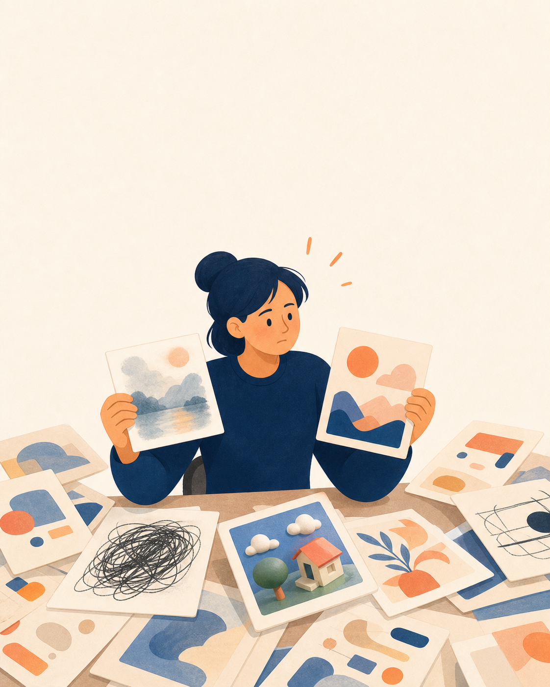
研究者把两张结果并排拿起：一张像水彩，一张像扁平绘本；桌上还有涂鸦、3D和抽象图。单张都能看，但放在同一项目里没有共同身份。
因此 不能继续随机生成，下一步必须先建立风格档案。
散乱图片被拆成构图、线条、色板、材质和禁用项，再收进统一档案。它们不再只是收藏夹里的灵感图，而是有身份的生产资产。
但是 有档案不代表会选，下一步要回答“这个任务该用哪一种”。
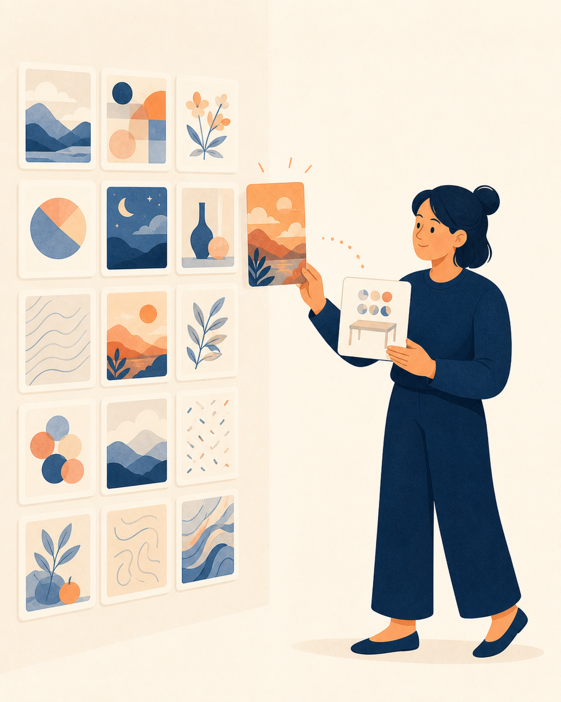
研究者拿着“研究项目封面”任务卡，在风格墙中选择一张珊瑚橙配方。内容目的成为路由条件，个人偏好不再是唯一依据。
接下来 两张卡仍不能直接出图，还需要完整规则和确定性组装。
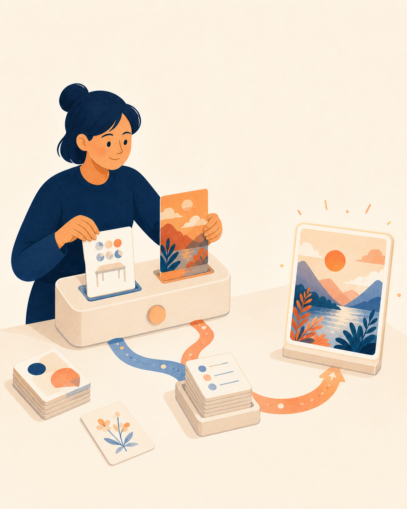
内容卡与风格卡进入不同输入槽，固定规则卡负责补齐构图、色板和禁用项，最后才交给图像模型。过程看起来像组装，而不是许愿。
然而 正式流程也会失败，下一幕必须让失败变成规则的一部分。
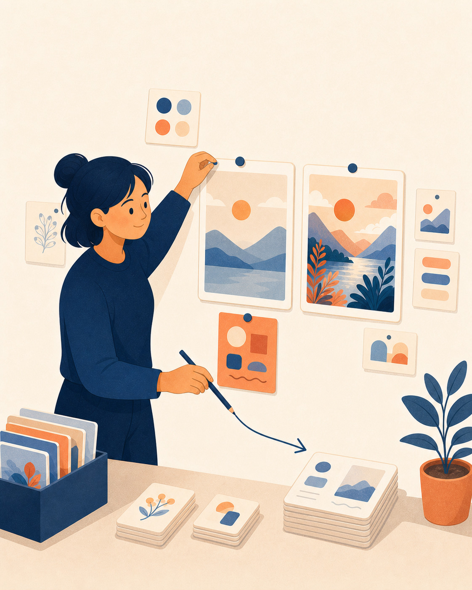
第一张结果过于统一，缺少目标风格的局部节奏。研究者把它和修正图并排保留，再用一张橙色证据卡把缺陷连接到更新后的规则。
直到 不同用途的图片都能遵守同一视觉语言，项目才具备发布条件。
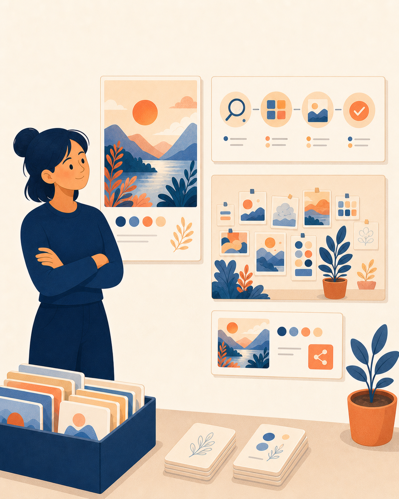
封面负责让人记住，流程图负责让人看懂，故事图负责让人感受，分享卡负责传播。用途不同，但主角、色板、纸面和视觉语法一致。
闭环 图片从孤立装饰，变成有背景、有因果、可持续复用的视觉系统。
下面三张图片由本项目直接使用 ChatGPT ImageGen 生成。它们不再是随机风格样图，而是分别服务于“记住项目、看懂原理、感受过程”。准确标题与解释保留在 HTML 中，图片只负责视觉转译。
把“零散提示词被整理成可复用视觉合同”变成一个可见场景，替换原来漂亮但与项目主题无关的家庭样图。

不用图片内文字，单靠四格动作表达“收集内容 → 选择风格 → 组装约束 → 生成图片”，准确术语由旁边正文负责。

把“失败样例也是研究证据”从一句抽象原则转成团队行动：不丢弃失败图，而是贴回证据墙并记录原因。
证明一种风格能长什么样，不代表我们的项目内容。
代表明确内容、页面职责和复用位置，并保留生成提示词。
核心内容始终是“把混乱 Prompt 变成可复用视觉系统”，但受众和传播任务改变后，画风承担的意义也会改变。下面4张均由 ChatGPT 使用上游对应样图作为纯风格参考重新生成。
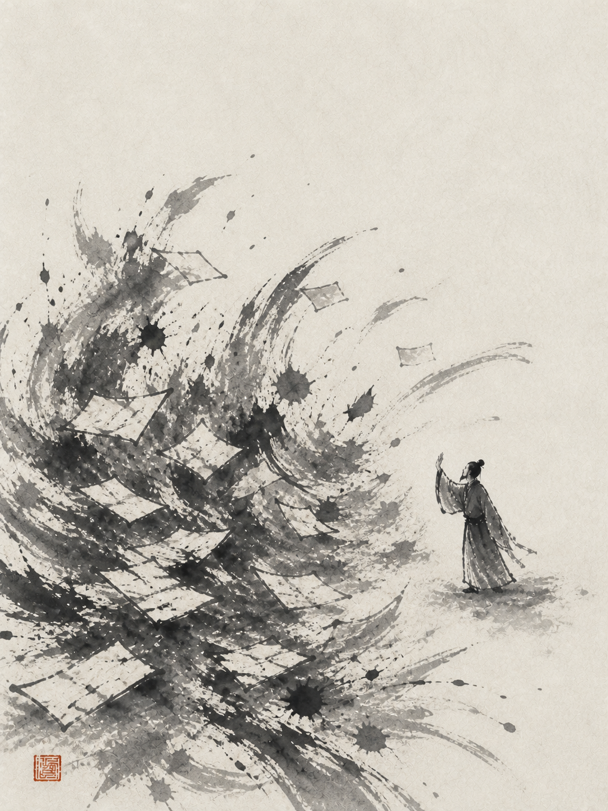
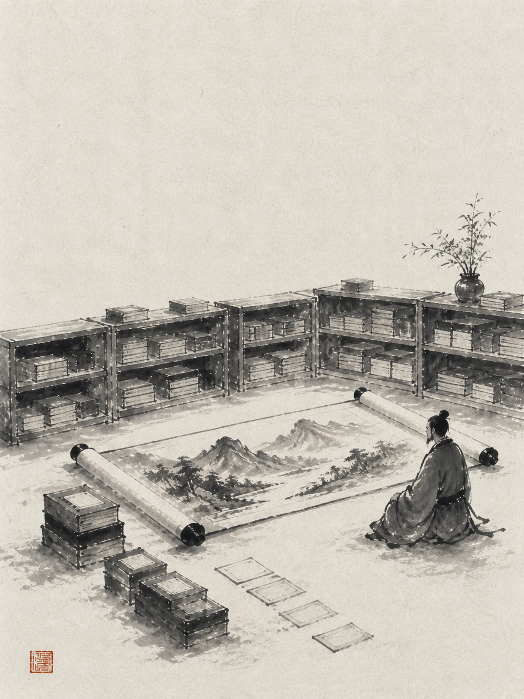
混乱纸片像风暴，档案像向上延伸的墨石路径，最终抵达一卷安静画卷。它不解释每个操作步骤，而是表达“从无序到有序”的方法论气质。
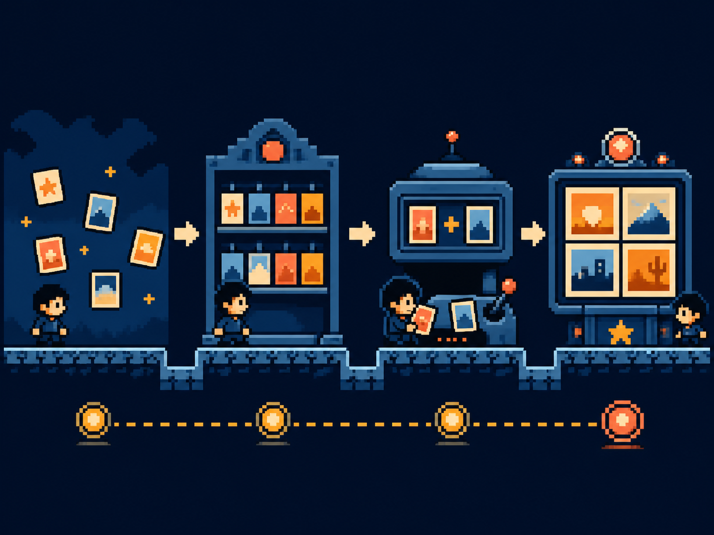
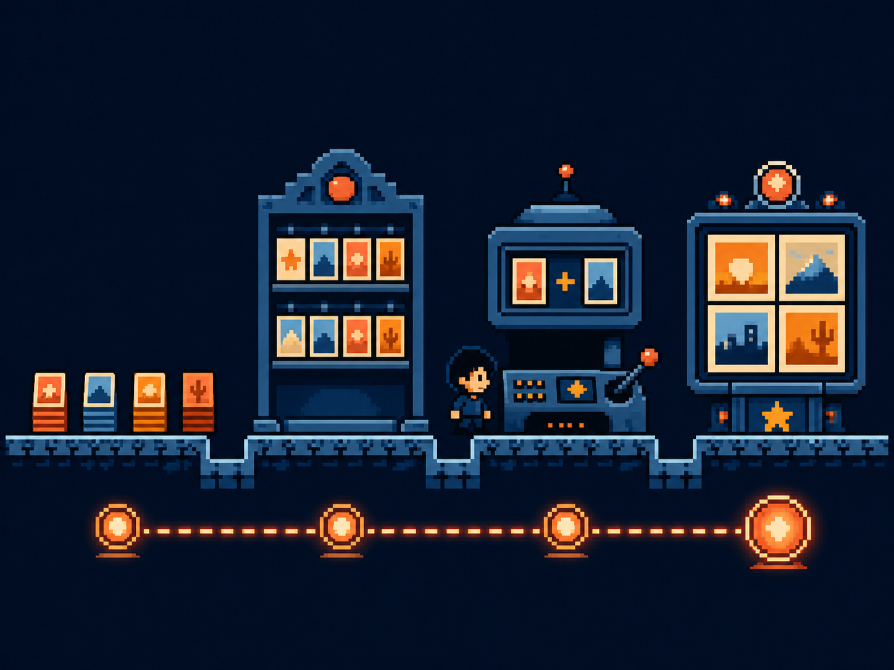
收集卡片、进入档案检查点、在合成台组合内容与风格、到达成套资产终点。它把抽象流程转成有进度、有反馈的任务路径。
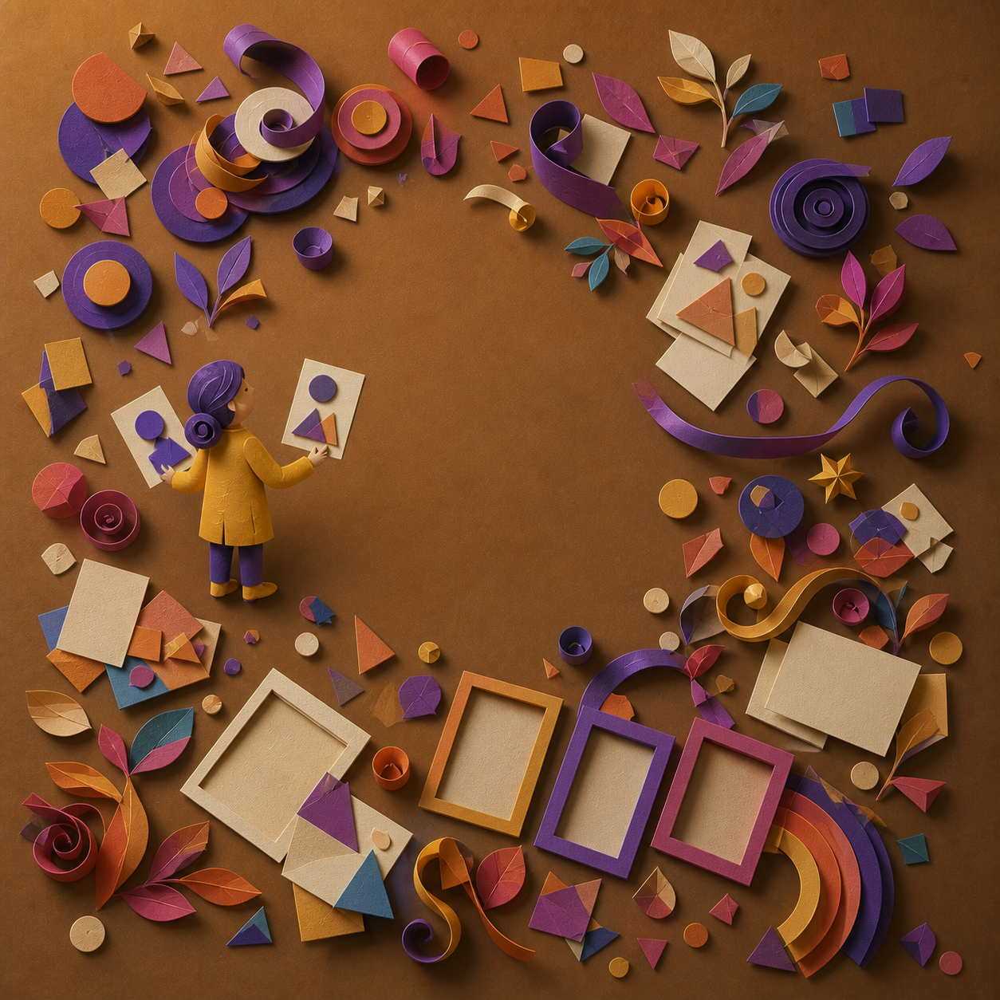
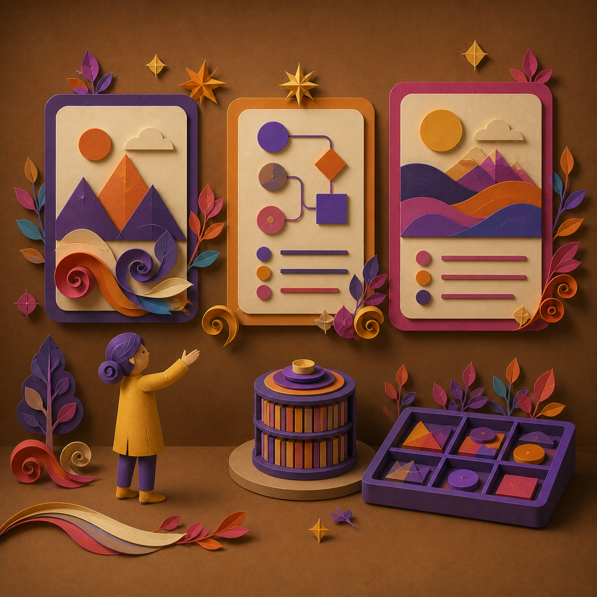
中央档案像一座层叠纸艺装置，卷曲纸带把输入连接到封面、流程图和故事卡。它强调“系统被精心设计和制作”，而不是技术运行细节。
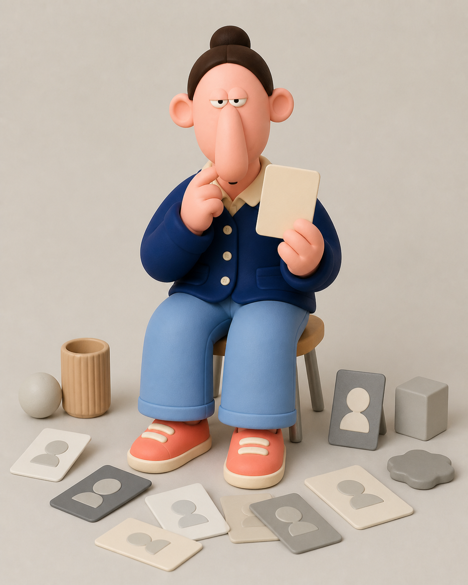
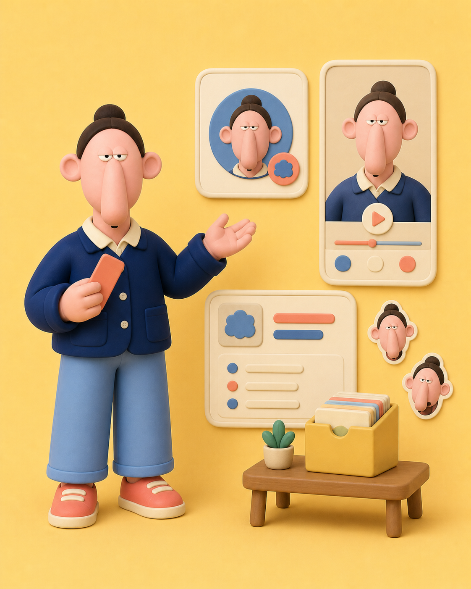
角色一手展示风格卡，一手抱着档案盒。它不承担复杂结论，而是让项目拥有可以反复出现的“研究助手”，适合建立亲近感和记忆点。
以下均为上游仓库随配方保存的样图，不是我们重新生成或挑选的第三方图片。它们证明的是风格覆盖面，不代表不同模型每次都会得到完全相同的输出。


完整 19 套样图与输入示例：upstream/examples/README.md
最容易产生误解的是把它当成一个图片生成器。源码恰好证明相反：仓库负责生成之前的路由、知识和调用合同。
SKILL.md / AGENTS.md告诉不同 Agent 何时触发，以及完整规则放在哪里。
PROTOCOL.md识别风格、推断占位符、处理比例、选择文本或 JSON 输出。
STYLES.md将线条、色板、材质、构图和禁止项固化成19套完整配方。
render_prompt.py原样提取模板、替换变量、校验锚点并构建调用包。
GPT Image / Midjourney / other真正解释 Prompt、参考图和编辑请求并生成像素。
普通风格
Agent 填充内容参数，渲染器从单一真源原样取配方。下游模型负责执行，仓库不保证跨模型像素一致。
内容 → 风格编号 → 完整 Prompt → 图像模型3.1 稳定变体
固定锚点随每张请求传入；前两阶段只能算中间图，只有第二次涂抹修正后的输出才能进入 final。
基础生成
→ scribble-correction
→ scribble-chaos-correction ✓上游已经回答“这种风格怎么画”。我们不应该再维护一份色板和线条规则，而应回答“研究与日常内容什么时候适合用它”。
用 1 或 4 号把研究步骤、证据分级和决策链拆成多格信息图。
推荐 01 / 04用小豆人突出要点，或用暖色扁平绘本建立更强传播识别。
推荐 04 / 18二维水彩适合概念气氛，暖色扁平适合清晰、现代的项目主视觉。
推荐 11 / 18用单一橙色焦点和大片留白，把发布、修复或失败复盘变成一个场景。
推荐 103.1 适合人物关系和日常事件，但正式使用必须执行锚点与三阶段合同。
推荐 3.1不复制 `STYLES.md`，不追加第二套风格段落，不把业务偏好混进受控主体字段。
这里演示我们新增的轻量扩展：先选用途，再得到推荐风格和一段可以交给 Agent 的调用指令。它不会伪装成图像模型，也不会复制上游配方。
它只提交场景、风格编号、内容、文字和比例，并明确要求 Agent 从上游配方原样渲染。3.1 会额外要求正式 JSON、固定锚点和三阶段工作流。